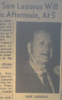

Obituaries of Sam Lazarus from Valdosta Daily Times (Georgia) in 1950
 Obituaries for Sam Lazarus of Valdosta, Georgia from 1950.
Citation 1 (21 Jun 1950)
"Funeral for Sam Lazarus will be held this afternoon, at 5", obituary, 21 Jun 1950 (Wednesday), page 5, col. 4-5; Valdosta Daily Times, newspaper; Lowndes, Georgia, United States; microfilm at Valdosta Lowndes County Library.
Citation 2 (22 Jun 1950)
"Sam Lazarus laid to rest", obituary, 22 Jun 1950 (Thursday), page 5, col. 1; Valdosta Daily Times, newspaper; Lowndes, Georgia, United States; microfilm at Valdosta Lowndes County Library.
Transcript of June 21 [paragraphs and lists added]
[picture of Sam in top right of article]
Funeral services for Sam Lazarus, well known and highly respected Valdosta businessman who drowned yesterday at Neptune Beach, [Duval county] Florida, will be held at 5 o'clock this afternoon [21 June] at the McGowan Funeral home [308 N. Patterson Street] here.
The 62-year-old [born about 1888] Mr. Lazarus had been in Neptune Beach for the past ten days at his summer home. He drowned yesterday while friends watched from shore, thinking he was floating in the surf.
Red Cross life-saving officers worked desperately in an attempt to resuscitate him.
Witnesses differed in their stories of the accident. Lifesavers said they were told Mr. Lazarus was swimming alone but was being observed from shore. When he did not make any motion for more than half an hour, friends on shore went to his aid.
Others who described the accident said Mr. Lazarus threw up his hands as he was swimming but by the time help reached him he was unconscious.
Captain Paul Smith, lifesaver in charge of the Jacksonville Beach Patrol, worked on the body with artificial respiration for several hours even after Mr. Lazarus had been pronounced dead.
Mr. Lazarus has operated a business in Valdosta for more than 40 years. He and his son, Leon Lazarus, operated the Sam Lazarus Company.
He was a Mason, a member of B'Nai B'Rith [Jewish fraternal and aid organization], and the Valdosta Hebrew Congregation [later known as Temple Israel]. He was always active in civic and fraternal work, taking part in many local campaigns for the progress of this city and section.
Survivors include
- his wife,
- Mrs. Anna [Stein] Lazarus;
- five sons,
- Mendel Lazarus, Moultrie [Georgia];
- Leon,
- Sidney, and
- Milton Lazarus, of Valdosta; and
- Ralph Lazarus, Boston, Mass.;
- one daughter,
- Mrs. Francis Simon, Jacksonville [Florida];
- three sisters,
- Mrs. William Rosenburg, Jacksonville;
- Mrs. Reba Boh[r]man, Lake City [Florida]; and
- Mrs. Sara Mi[c]helson, Perry [Florida];
- four brothers,
- Joe Lazarus, Valdosta;
- Israel and
- Phillip Lazarus, Quitman [Georgia]; and
- Will Lazarus, Sparks [Georgia];
- and three grandchildren.
The body was brought to Valdosta this morning [21 Jun] by Seashole Funeral Parlors, Jacksonville.
Interment will be in Sunset Hill in the Valdosta Hebrew cemetery.
Transcript of June 22 [paragraphs and lists added]
Funeral services for Sam Lazarus, who died suddenly at Neptune Beach Fla., Tuesday [20 Jun], were held yesterday [21 Jun] afternoon at the McGowan Funeral Home [308 N. Patterson Street, Valdosta].
Rabbi Morris Sklar, pastor of the Valdosta Hebrew Congregation [later known as Temple Israel], officiated.
A large number of friends attended the services to pay final tribute to Mr. Lazarus, who had been a resident of Valdosta for 40 years [since about 1910] and was widely known.
- W. G. Bullock,
- David Joyce,
- J. L. Newbern,
- H. A. Crosby,
- Izzy Kreiger,
- Abe Levin,
- Dave Steigman,
- Si Morris,
- Dr. Frank Bird, and
- Emmette McRae
served as honorary pallbearers.
Active pallbearers were
- Al Siskind,
- Abe Golivesky,
- Harry Abrahams,
- Sidney Pearlman,
- Nathan Friedlander,
- Joe Kalin,
- Sam Kalin, and
- William Landey.
Interment was in Sunset Hill [Valdosta].